Windows Network Drive (WND)
- Introduction
- Installation
- Configuration
- Troubleshooting
- General or Connectivity Issues
- Kerberos Testing
- libsmbclient Issues
- Basic Setup for One ownCloud Server
- Password Options
- Reduce WND Notifier Memory Usage
- 3rd Party Software Examples
- Password Option Precedence
- Optimizing wnd:process-queue
- The File Serializer
- Usage Recommendations
- Interaction Between Listener and Windows Password Lockout
- Multiple Server Setup
- Basic Command Execution Examples
- Performance on High Number of ACL Targeting Users
Introduction
The Windows Network Drives app seamlessly integrates Windows and Samba/CIFS shared network drives as external storages. WND has great advantages compared to standard SMB access.
The Windows Network Drives app creates a control panel in your Admin page. Any Windows file share and Samba servers on Linux and other Unix-type operating systems use the SMB/CIFS file-sharing protocol. The files and directories on the SMB/CIFS server will be visible on your Files page just like your other ownCloud files and folders.
Compared to standard SMB access, WND has advanced features like:
-
User lockout prevention and password reset
-
More authentication mechanisms against the backend like Kerberos
-
Listen to change information triggered by the backend
-
Enhanced ACL support
-
Collaborative WND (CWND)
- User lockout prevention and password reset
-
Depending on the Windows or Samba policy, users could get locked out of their account if they enter a wrong password a number of times. The lockout prevention tries to avoid this from happening by resetting the password if it is wrong. This is also true for Collaborative WND when using
login credentials saved in databaseand a repeatedly running files-scan job which may use outdated credentials. In the case of ownCloud’s standard SMB connector, the password won’t be reset. It could happen that users get locked out of the file server. - More authentication mechanisms against the backend
-
Please see the details about the Enterprise-Only Authentication Options.
- Listen to change information triggered by the backend
-
Native Windows file servers provide the ability to send change notifications regarding modified files and folders somewhere in a share. On the other hand, SMB can send change notifications as well, as long as all the change actions are performed through the SMB protocol. However, for Samba this won’t work if the action is performed directly inside the filesystem used by Samba. Additionally, there are some technical limitations that prevent using the Samba notification capability. With the implementation of ownCloud’s listener, the benefits of both worlds are available for proper change notifications. This listener updates the ownCloud database on changes and provides the changes made to accessing users. Users do not need to manually check for changes in all possible locations of their mount. Changes processed are also propagated to sync clients automatically.
- Enhanced ACL support
-
With enhanced ACL support, both SMB and WND evaluate the file attributes (whether the file is hidden or read-only) to decide what ownCloud permissions the file or folder should have in ownCloud. On top of this, WND can also evaluate the ACLs by using the
ocLdapPermissionManagerin the mount point configuration. This will bring more accurate permissions to ownCloud, especially when each user can have different permissions for the files in Windows. Consider when using CWND, only the defaultnullPermissionManagercan be used. - Collaborative WND (CWND)
-
Compared to a standard WND mountpoint, a collaborative WND mount offers enhanced features. In a CWND, each user shares the same ownCloud internal information for files and folders based on its internal identification (file_id). This means that comments and tags can be shared with all users accessing files and folders of this mount without the need that users must be members of the mount from an ownCloud point of view. A CWND can only be set by an admin in but not in the users section. With CWND, all accessing users have their own access to the mount with their own credentials but share additional information with other users accessing the same data. See the table below to compare the differences.
Collaborative WND Differences Based on the Mount Type Windows Network Drive Windows Network Drive (collaborative) Login Credentials
-
User credentials
-
Credentials of the sharer
-
Log-in credentials, saved in session -
Log-in credentials, saved in database -
User entered, stored in database
File ID
Unique per user or from the sharer
Same for all users accessing this mount
Access Rights
From the accessing user or the sharer
From the accessing user
Activities
Comments
Tags-
No shared access
-
Visibility limited to the user
-
-
Shared access
-
Comments and tags are shared, access based on the sharer
-
Comments and tags are shared, access based on the user
-
Mounts to a Windows or Samba file server are labeled with a little four-pane Windows-style icon, and the left pane of your Files page includes a Windows Network Drive filter.
Files are synchronized bidirectionally, and you can create, upload and delete files and folders. ownCloud server admins can create Windows Network Drive mounts and optionally allow users to set up their own personal Windows Network Drive mounts.
Depending on the authentication method, passwords for each mount are encrypted and stored in the ownCloud database, using a long random secret key stored in config.php. This allows ownCloud to access the shares when the users who own the mounts are not logged in. This access will not work if the mount is session based, where passwords are not stored and are available only for the current active session. In case other users are granted access to this mount, they will see a red triangle with an exclamation mark on the bottom right of the mount icon identifying lack of access.
Installation
Install the External Storage: Windows Network Drives app from the ownCloud Market App or ownCloud Marketplace. To make it work, a few dependencies have to be installed.
-
A Samba client. This is included in all Linux distributions. On Debian, Ubuntu, and other Debian derivatives it is called
smbclient. On SUSE, Red Hat, CentOS, and other Red Hat derivatives it issamba-client. -
php-smbclient(version 0.8.0+). It should be included in most Linux distributions. You can use Installation from PECL, if your distribution does not provide it or if you want to use a more updated version than the one provided by the OS. See Updating pear for a necessary prerequisite. -
whichandstdbuf. These should be included in most Linux distributions.
To install and configure the necessary packages, see the Prepare Your Server section of the manual installation documentation.
| For more information on SMB/CIFS in ownCloud, refer to the Samba file server configuration documentation. |
If you encounter errors when using the WND app like NT_STATUS_REVISION_MISMATCH, please get in touch by Opening a Service Request.
|
|
ownCloud requires at least Samba 4.7.8 or Samba 4.8.1 on the ownCloud server, when:
The Windows Network Drive Listener only supports version 1 of the SMB protocol (SMB1) with earlier Samba versions. Background A Samba server, often a Microsoft Windows Server, can enforce the minimum and maximum protocol versions used by connecting clients. However, in light of the WannaCry ransomware attack, Microsoft patched Windows Server to only allow SMB2 as minimum protocol by default, as SMB1 is insecure. The ownCloud windows network drive listener utilizes the SMB notification feature which works well with SMB1 in conjunction with most Samba versions. However, when the minimum protocol a server accepts is SMB2, ownCloud requires Samba 4.7.8+ (4.8+ etc.) to be able to properly work, as prior versions of Samba had a bug that broke this feature. |
Configuration
Enabling External Storage
To enable external storage, as the ownCloud administrator go to and tick the checkbox Allow users to mount external storage.
Creating a New Share
- When you create a new WND share, you need multiple things
-
-
the server name or address hosting the share,
-
the login credentials for the share if required by the authentication method,
-
the share name and
-
optionally, a sub-folder of the share you want to connect to.
Treat all the parameters as being case-sensitive. Although some parts of the app might work properly regardless of casing, other parts might have problems if the case is not respected.
-
When using Kerberos authentication, read the following documentation first:
-
Kerberos Authentication.
This documentation is a necessary prerequisite to set up Kerberos for use with ownCloud. -
Kerberos Mountpoint.
There are additional settings required when adding a mount point using the Kerberos authentication.
-
-
When using Credentials hardcoded in config file authentication, read the following documentation first:
-
Notes for Credentials Hardcoded in Config File.
This documentation is a necessary prerequisite to set up this authentication type. -
Special Settings when using 'Credentials hardcoded in config file'.
There are special settings required when adding a mount point using this authentication type.
-
-
- Follow this procedure to create a new mount point based on WND
-
-
Enter the ownCloud mount point for your new WND share. This must not be an existing folder.
-
Select your authentication method. See Enterprise-Only Authentication Options for complete information on the available authentication methods.
-
Enter the address of the server that contains the WND share.
-
Use the share name provided by Windows or Samba.
-
Optionally, the root folder of the share. This can be a subfolder name, or the
$uservariable when assigning the user’s home directory. Note that the LDAPInternal Username Attributemust be set to thesamaccountnamefor either the share or the root to work, and the user’s home directory needs to match thesamaccountname. (See User Authentication with LDAP.) -
Add the login credentials, if required, depending on the authentication method selected.
-
Sharing
-
Admin only :
Admins can define that mount points can be shared to all (default), or be restricted to individuals or groups. Note that sharing is not available for all authorization methods. For details please see the Enterprise-Only Authentication Options. In this case, you will also see the following on the mount point: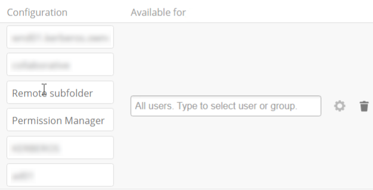
-
All :
If sharing of mounts is allowed by the admin via , users can share the mount via . To avoid accidentally sharing resources, the user must allow sharing a mount in the mount points view upfront by clicking on the gear icon as shown below. Enable sharing appears only if sharing is generally allowed by the admin, see above.
-
-
Click the gear icon for additional mount options. Previews are enabled by default, but when using large storages with many files, you may want to disable previews as this can significantly increase performance.
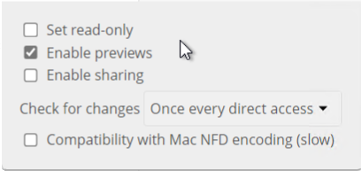
-
Your changes are saved automatically.
-
Finally, the mount point is created and will look like this example if a user has set it up:
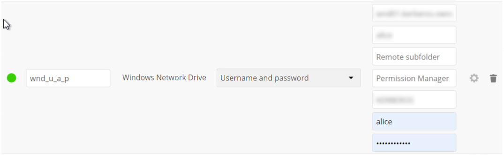
When you create a new mountpoint using login credentials (session-based), you must log out of ownCloud and then log back in so you can access the share. You only have to do this the first time. -
Special Settings when using 'Credentials hardcoded in config file'
The Config key to be entered as shown in the screen below, must be taken as described in Value to be entered in the mount point config key field.
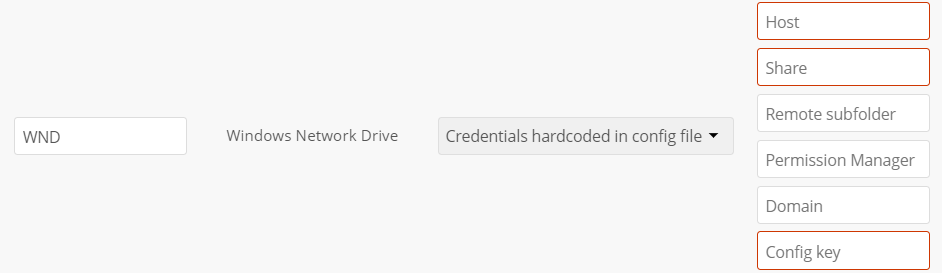
Note that this authentication method can only be used by ordinary users if the admin hands over the Config key created. This is secure, as no password is exposed.
Special Settings when Adding a Kerberos Mountpoint
| See the linked section for important information when planning to use Collaborative WND. |
When the Kerberos Authentication has been set up, a necessary config key wnd.kerberos.servers needs to be provided upfront in config.php.
-
Kerberos Server ID
This ID can be chosen from the config paramater sectionwnd.kerberos.serversand defines required parameters for the WND Kerberos setup. Multiple ID’s with different setups can be created. -
ockeytab
This is the keytab file that has been described in Keytab Files. -
ocservice
This is the SPN of the service user that has been described in Service Principal Name (SPN). -
usermapping
Define a usermapping if necessary or required.
- The usermapping key
-
This key has several types where you can read more about in the wnd.kerberos.servers config section. The
nooptype is the one mostly used which does not map. The following type is described in more detail:- Type EALdapAttr
-
Note that
usermappingwith typeEALdapAttris only possible with the enabled and configured LDAP Integration app. WND will throw an error if not.The LDAP attribute for using the correct login information is defined during the LDAP Integration app setup. On the users first time login after the LDAP Integration app has been configured, the UID will be stored in the ownCloud database and is fixed from that time on. It can be possible, that the ownCloud UID might not be usable for Kerberos like when the
objectuidattribute has been defined for the ownCloud UID. For this case, a mapping can be defined to use a different LDAP attribute for the UID to authenticate with Kerberos. To do so, go to the LDAP settings in ownCloud at and enter all possible LDAP attributes which you want to use for mapping. Usually these areuserPrincipalNameandsAMAccountNamebut any can be defined. See the Microsoft User Naming Attributes for more details.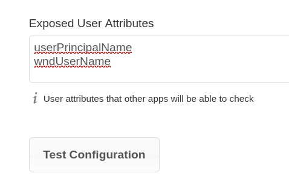
- The following rules apply for the EALdapAttr type
-
-
In the LDAP integration app settings, you can define more than one attribute allowed to map, where each attribute must be on its own line.
-
Casing the attribute name matters.
-
Each WND Kerberos Server ID block can hold exactly one
EALdapAttr/<attribute-name> assignment, but you can define multiple Server ID’s. -
Attributes defined at ownCloud must exist on the LDAP server and users must have that attribute assigned and configured.
-
If a WND config mapping else than
noopwas defined, it will lookup the mapping first.
-
Enter the Kerberos Server ID to define the server and Kerberos credentials as shown in the image below.
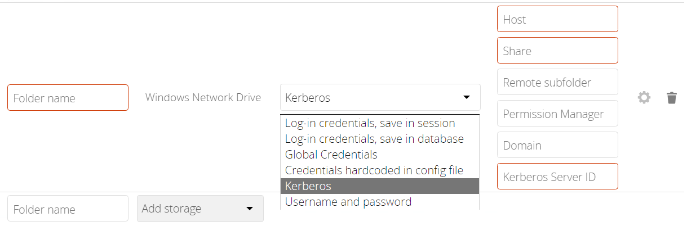
Note that this authentication method can only be used by ordinary users if the admin hands over the Kerberos Server ID created. Consider this as a very sensitive information like a password.
When the data has been entered correctly, the moint point will show up as follows:
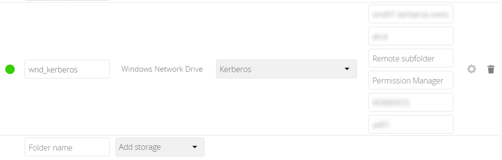
Permission Manager
Starting with version 1.0.1 of the Windows Network Drives App, Access Control Lists (ACLs) are supported. To obtain the ACL information, two ACL providers can be selected:
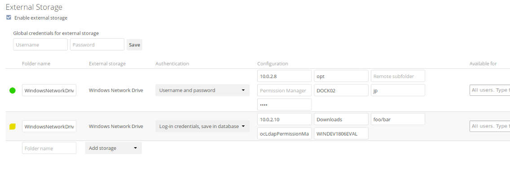
On standard deployments, you don’t need to change anything. Just leave the field empty and the default nullPermissionManager permission manager will be used.
Regardless of which provider you choose, an ownCloud administrator should run a files:scan, manually, after changing the configuration, to update the permissions correctly. Otherwise, the permissions shown by ownCloud might be incorrect.
| Permissions are only auto-updated if there has been a change in the files. |
The Null Permission Manager
The Null Permission Manager is the default permission manager for ACLs and is used, if no other ACL manager is specified. This is also the case, when no permission is explicitly set. If you want to retain ownCloud’s current behaviour, then use this permission manager. When in effect, the Windows Network Drive app uses the file’s attributes (e.g., read-only, and hidden), to determine how the user can interact with the file. There are no usage restrictions.
The value to select for this provider is: nullPermissionManager.
The ownCloud LDAP Permission Manager
The ownCloud LDAP Permission Manager evaluates ACLs in files along with file attributes to determine the permissions. In order to evaluate the ACLs, it needs access to the user and group membership information of the target Windows or Samba server. Therefore it uses ownCloud’s LDAP Integration app for this.
| Both the Windows (or Samba) server and ownCloud’s LDAP Integration app must connect to the same Active Directory server so that ownCloud can retrieve the same user and group information. |
The use of this provider requires two key things:
-
An Active Directory server which contains the standard user and group information that can be used by the LDAP Integration app.
-
ownCloud’s LDAP Integration app to be correctly configured to retrieve user and group information from the same Active Directory / LDAP server as the one that the Windows or Samba server uses.
The ownCloud LDAP Integration app must configure the sAMAccountName to be the ownCloud server’s username.
|
|
Some groups, such as |
The value to select for this provider is: ocLdapPermissionManager.
WND Notifications
The SMB protocol supports registering for notifications of file changes on remote Windows SMB storage servers. Notifications are more efficient than polling for changes, as polling requires scanning the whole mounted SMB storage. While files changed through the ownCloud Web Interface or sync clients are automatically recognized by ownCloud, recognition is not possible when files are changed directly on remote SMB storage mounts. When using the listener, files changed on the SMB backend are recognized and a notification is stored in the database. The process-queue job reads these stored notifications and initiates further actions.
| The capability of the listener depends on the ability of the used SMB/CIFS storage backend to provide notifications. While Windows file servers have no limitations, some vendors may have restrictions. Please check these with your storage provider. It may be possible, that for example notifications for Samba only work for the target folder you’re listening to, but not for any sub structures. If you’re listening on the "/top" folder, you may not receive notifications for "/top/middle/bottom" folder. In this case, you have to set up listeners for every existing folder and also for any new folders that will be created. With Windows file servers, you will receive notifications for every file or subfolder inside the folder you’re listening to. |
WND Listener Setup
The WND listener for ownCloud 10 includes two different commands that need to be executed:
-
wnd:listen Listen to changes and save them in the database
-
wnd:process-queue Process saved listener changes from the database
wnd:listen
This command listens to changes for each host and share configured and stores all notifications gathered in the database. It is intended to run this command as a service. The command requires the Windows/Samba account and the host/share the listener will listen to. The command does not produce any output by default, unless an error happens. Each stored notification will be further processed by the wnd:process-queue and will be removed from the database after processing.
You can increase the command’s verbosity by using -vvv. Doing so displays the listeners activities including a timestamp and the notifications received. A read-only permission for the used account should be enough, but may need to be increased.
|
The simplest way, useful for initial testing is, to start the wnd:listen process manually, as follows:
sudo -u www-data ./occ wnd:listen <host> <share> <username>The password is an optional parameter and you will be asked for it if you didn’t provide it as in the example above. If necessary, the workgroup can be set together with the username as well. Use following syntax and set quotes, which is important to keep the backslash '<workgroup>\<username>'. The whole example command looks like:
sudo -u www-data ./occ wnd:listen <host> <share> '<workgroup>\<username>'In order to start wnd:listen without any user interaction like as service, provide the password from a password file.
sudo -u www-data ./occ wnd:listen <host> <share> <username> \
--password-file=/my/secret/password/file \
--password-trimFor additional options to provide the password, check Password Options.
Note that the password must be in plain text inside the file. Neither spaces nor newline characters will be removed from the contents of the file by default, unless the --password-trim option is added. The password file must be readable by the apache user (or www-data). Also make sure that the password file is outside of any directory handled by apache (web-readable) for security reasons. You may use the same location when using flock in Execution Serialization below.
You should be able to run any of those commands, and/or wrap them into a systemd service or any other startup service, so that the wnd:listen command is automatically started post booting.
wnd:process-queue
This command processes the stored notifications for a given host and share. This process is intended to be run periodically as a Cron job, or via a similar mechanism. The command will process the notifications stored by the wnd:listen process, showing only errors by default. If you need more information, increase the verbosity by calling wnd:process-queue -vvv.
As a simple example, you can check the following:
sudo -u www-data ./occ wnd:process-queue <host> <share>You can run that command, even if there are no notifications to be processed.
Depending on your requirements, you can wrap that command in a Cron job so it’s run every 5 minutes for example.
WND Listener Service Configuration
Create a service for systemd following the instructions below that checks for processable notifications:
|
-
For each WND mount point distinguished by a SERVER - SHARE pair:
-
Replace the all upper case words
SERVER,SHARE,USERandPASSWORDin both, the filename and in the contents below with their respective values. -
Place one copy of a file with the content from below under
/etc/systemd/system/owncloud-wnd-listen-SERVER-SHARE.service
To do so, enter following command and replace <name> withowncloud-wnd-listen-SERVER-SHARE. For more details see Editing Unit Files.sudo systemctl edit --force --full <name>.serviceReload the deamon to make it available:
sudo systemctl daemon-reload -
Take care to also adjust the paths in
WorkingDirectoryandExecStartaccording to your installation. -
Password: Create a file readable only by the www-data user and outside the directories handled by Apache (let’s suppose in /tmp/mypass). The file must contain only the password for the share. In this example our file is: "/tmp/mypass". The listener will read the contents of the file and use them as the password for the account. This way, only root and the Apache user should have access to the password.
-
--password-trimin directiveExecStartremoves blank characters from the password file added by 3rdparty software or other services.
-
-
Content template for
owncloud-wnd-listen-SERVER-SHARE[Unit] Description=ownCloud WND Listener for SERVER SHARE After=syslog.target After=network.target Requires=apache2.service [Service] User=www-data Group=www-data WorkingDirectory=/var/www/owncloud ExecStart=./occ wnd:listen -vvv SERVER SHARE USER --password-file=/tmp/mypass --password-trim Type=simple StandardOutput=journal StandardError=journal SyslogIdentifier=%n KillMode=process RestartSec=3 Restart=always [Install] WantedBy=multi-user.target -
Run the following command, once for each created file:
sudo systemctl daemon-reload sudo systemctl enable owncloud-wnd-listen-SERVER-SHARE.service sudo systemctl start owncloud-wnd-listen-SERVER-SHARE.service -
To list all systemd wnd listeners for ownCloud run the following command, assuming you use the naming convention described above:
systemctl list-units | grep owncloud-wnd-listen -
Please re-run the following commands if you are changing the contents of a particular listener service:
sudo systemctl daemon-reload sudo systemctl restart owncloud-wnd-listen-SERVER-SHARE.service
For more information about configuring services for systemd, read How To Use Systemctl to Manage Systemd Services and Units
WND Process Queue Configuration
Create or add a crontab file in /etc/cron.d/oc-wnd-process-queue.
The commands must be strictly sequential. This can be done by using flock -n and tuning the -c (chunk-size) parameter of occ wnd:process-queue, see the wnd occ commands description and the Execution Serialization below.
|
-
Make a
crontabentry to run a script iterating over allSERVER SHAREpairs with an appropriateocc wnd:process-queuecommand.* * * * * sudo -u www-data /var/www/owncloud/occ wnd:process-queue <HOST> <SHARE>
Execution Serialization
Parallel runs of wnd:process-queue might lead to a user lockout. The reason for this is that several wnd:process-queue might use the same wrong password because it hasn’t been updated by the time they fetch it.
It’s recommended to force the execution serialization of the wnd:process-queue command. You might want to use Anacron, which seems to have an option for this scenario, or wrap the command with
flock.
If you need to serialize the execution of the wnd:process-queue, check the following example with flock
flock -n /opt/my-lock-file sudo -u www-data ./occ wnd:process-queue <host> <share>In that case, flock will try to get the lock of that file and won’t run the command if it isn’t possible. For our case, and considering that file isn’t being used by any other process, it will run only one wnd:process-queue at a time. If someone tries to run the same command a second time while the previous one is running, the second will fail and won’t be executed.
The lock file /opt/my-lock-file itself will be created as an empty file by the flock command if it does not yet exist, but after it has been created the lock file doesn’t change. Only an flock will be applied and removed. The file won’t be removed after the script completes.
You can use flock also in cron, see the example below:
* * * * * flock -n /opt/my-lock-file -c 'sudo -u www-data /var/www/owncloud/occ wnd:process-queue <HOST> <SHARE>'Check flock’s documentation for details and more options.
Activity Extension
From version 2.0.0 the Windows Network Drive app includes an extension of the Activity app. This extension will allow the app to send events to the Activity app so the users know what happened in the Windows Network Drive storage.
Please see the following figure how a notification can look like. In this example, one user accessing the same host/share has changed a file. Other users will now get an activity notification about this change.
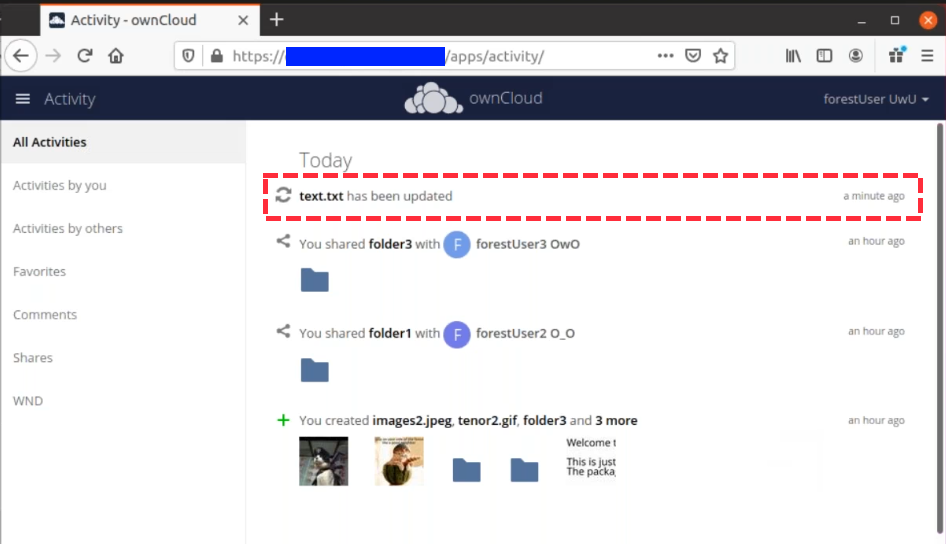
This extension requires the following components:
-
wnd:listencommand set up and running in order to get the storage events -
wnd:process-queuecommand running periodically (or manually) over the event queues generated by thewnd:listencommand -
The Activity app enabled
For setting up the wnd:listen and wnd:process-queue commands, see their respective sections above.
This extension is disabled by default. This means that no activity will reach the users. In order to enable this extension, you can edit the config/config.php file and add the following configuration:
'wnd.activity.registerExtension' => true,| This configuration will affect all the WND mount points. |
The events that will be shown to the users are based on what the wnd:process-queue detects and changes in the ownCloud’s FS. Since the command includes some optimizations, some events might be inaccurate in some scenarios. For example, if multiple files are added in the same folder, there won’t be multiple "file added" events but only one "folder modified" in the parent folder.
The events are expected to reach only to the affected users. This filters out the users who cannot access the mount point, and also the users who do not have enough permissions in the Network Drive (Windows, Samba) to access that file.
As part of the Activity app configuration, users can decide which events they want to be notified about and how, in the activity stream or via email.
Users who can access the Windows Network Drive storage via share won’t receive activity notifications by default. You can add the following configuration in the config/config.php file to enable sending the activity notification to those users.
'wnd.activity.sendToSharees' => true,
wnd.activity.sendToSharees key depends on the wnd.activity.registerExtension key to take effect.
|
Collaborative WND
Collaborative WND (CWND) can only be set by an admin in . This mount type cannot be selected by users in the user section. To prepare access for your mount point using the CWND mount type, you must provide a Service Account (SA) which is an ordinary SMB user granting read access to the share you want to mount. You can use one SA for all CWND mounts or separate ones. The SA is used to gather the contents of a share used by the WND Listener and provides a common file_id to all accessing users, while the accessing users can only access those files and folders for which they’ve been granted rights.
For obvious reasons, do not use the $user placeholder for the share name. It would map to the logged in users home directoy shared collaboratively.
|
| For the time being, no CWND is possible with Kerberos because of a necessary service user which is currently not available for Kerberos. |
-
As an admin, go to and create a new CWND based mount point.
Add a Collaborative Windows Network Drive Mount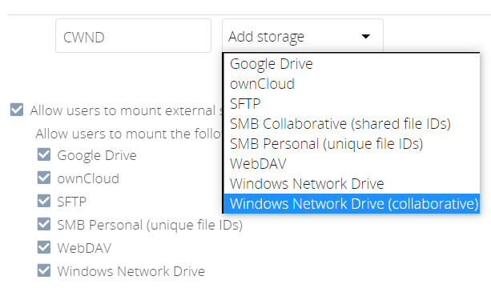
-
Chose any name for the mount point that fits your needs.
-
Select user login type.
The following three are sensible and working selections for CWND:
-
Log-in credentials, saved in session -
Log-in credentials, saved in database -
User entered, stored in database[1][1] Must be used if user authentication is made with OIDC
Select How User Logs in to the Mount Point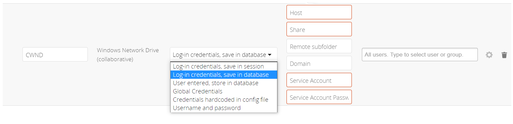
-
Log-in credentials, saved in sessionWhen the user logs in to ownCloud via a browser, the credentials to authenticate CWND are taken from this login. These credentials immediately end when the user logs out because the session has ended.
-
This login type can not be set to
Enable Sharing. -
This login type is by design not compatible with OIDC authentication.
-
-
Log-in credentials, saved in databaseSimilar to
Log-in credentials, saved in session, the credentials to authenticate CWND are taken from the login but saved in the ownCloud database. Any re-login also updates the database entry. As the credentials to access CWND are taken from the database, a user logout will not stop CWND access and serving data is continued, e.g. for synchronization.-
This login type can be set to
Enable Sharing. -
This login type is by design not compatible with OIDC authentication.
-
-
User entered, stored in databaseUser login to ownCloud and providing credentials to access the CWND mount are completely separated. After logging in to ownCloud, the user may see his CWND mounts marked inaccessible. To regain access, the user must enter his share credentials in which are then stored into the ownCloud database. As the credentials to access CWND are taken from the database, a user logout will not stop CWND access and serving data is continued, e.g. for synchronization.
-
This login type can be set to
Enable Sharing. -
This login type is by design the only one compatible with OIDC authentication.
Re-enter Mount Access Credentials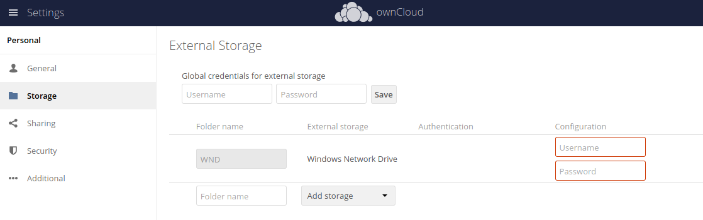
-
-
-
Configure this mount point by adding required data into the corresponding fields
Enter Connection Info and the Service Account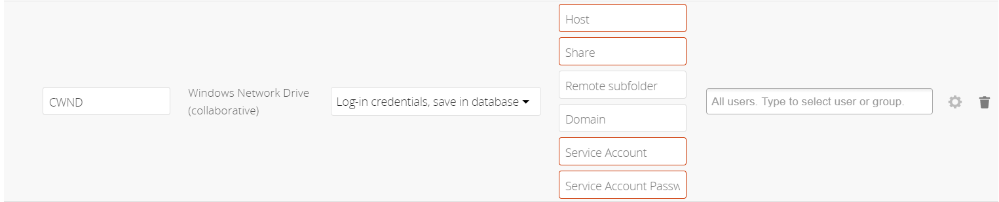
-
When everything has been entered correctly, the mount point gets a green button on the left.
Troubleshooting
General or Connectivity Issues
If you encounter issues using Windows network drive, then try the following troubleshooting steps:
First check the connection to the share by using smbclient on the command line of the ownCloud server. Here is an example:
smbclient -U Username -L //ServernameTake the example of attempting to connect to the host MyHost, the share named MyData using occ wnd:listen replacing user and password accordingly. Running the following command would work:
sudo -u www-data ./occ wnd:listen MyHost MyData user password| The command is case-sensitive, and that it must match the information from the mount point configuration. |
Kerberos Testing
To test if Kerberos has been setup properly for the use with WND, check the following on the server running ownCloud, replace keytab, SPN, <an-existing-domain-user> and <hostname_or_FQDN>/<share-name> accordingly. The domain user is the user on behalf the Kerberos ticket will be requested. Note that the shell user you are testing with must have access to the keytab file:
-
kinit -k -t \ <keytab-file-location>/<user-name>.keytab \ HTTP/<hostname_or_FQDN> -
kvno -U \ <an-existing-domain-user> \ -P -c /tmp/krb5cc_0 -k \ <keytab-file-location>/<user-name>.keytab \ cifs/<hostname_or_FQDN> -
smbclient \ --use-krb5-ccache=/tmp/krb5cc_0 \ --use-kerberos=required \ //<hostname_or_FQDN>/<share-name> -
Destroy the Kerberos ticket for security reasons:
kdestroy
libsmbclient Issues
If your Linux distribution ships with libsmbclient 3.x, which is included in the Samba client, you may need to set up the HOME variable in Apache to prevent a segmentation fault. If you have libsmbclient 4.1.6 and higher, it doesn’t seem to be an issue, so you won’t have to change your HOME variable. To set up the HOME variable on Ubuntu, modify the /etc/apache2/envvars file:
unset HOME
export HOME=/var/wwwIn Red Hat/CentOS, modify the /etc/sysconfig/httpd file and add the following line to set the HOME variable in Apache:
export HOME=/usr/share/httpdBy default, CentOS has activated SELinux, and the httpd process can not make outgoing network connections. This will cause problems with the curl, ldap and samba libraries. You’ll need to get around this to make this work. First, check the status:
getsebool -a | grep httpd
httpd_can_network_connect --> offThen enable support for network connections:
setsebool -P httpd_can_network_connect 1In openSUSE, modify the /usr/sbin/start_apache2 file:
export HOME=/var/lib/apache2Restart Apache, open your ownCloud Admin page and start creating SMB/CIFS mounts.
Basic Setup for One ownCloud Server
-
Go to the admin settings and set up the required WND mounts. Be aware though, that there are some limitations. These are:
-
ownCloud needs access to the Windows account password for the mounts to update the file cache properly. This means that "login credentials, saved in session" won’t work with the listener. ownCloud suggests to use "login credentials, saved in DB" as the best replacement instead.
-
The
$userplaceholder for the share name, such as//host/$user/path/to/root, providing a share which is accessible per/user won’t work with the listener. This is because the listener won’t scale, as you’ll need to setup one listener per/share equals one listener per user. As a result, you’ll end up with too many listeners. An alternative is, to provide a common share for the users and use the$userplaceholder in the root, such as//host/share/$user/folder.
-
-
Start the
wnd:listenprocess if it’s not already started, ideally running it as a service. If it isn’t running, no notifications are stored. The listener stores the notifications. Any change in the mount point configuration, such as adding or removing new mounts, and logins by new users, won’t affect the behavior, so there is no need to restart the listener in those cases.If you have several mount point configurations, note that each listener attaches to one host and share. If there are several mount configurations targeting different shares, you’ll need to spawn one listener for each. For example, if you have one configuration with
10.0.0.2/share1and another with10.0.0.2/share2, you’ll need to spawn 2 listeners, one for the first configuration and another for the second. -
Run the
wnd:process-queueperiodically, usually via a Cron job. The command processes all the stored notifications for a specific host and share. If you have several, you could set up several Cron jobs, one for each host and share with different intervals, depending on the load or update urgency. As a simple example, you could run the command every 2 minutes for one server and every 5 minutes for another.
As said, the command processes all the stored notifications, squeezes them and scans the resulting folders. The process might crash if there are too many notifications, or if it has too many storages to update. The --chunk-size option will help by making the command process all the notifications in buckets of that size.
On the one hand the memory usage is reduced, on the other hand there is more network activity. We recommend using the option with a value high enough to process a large number of notifications, but not so large to crash the process. Between 200 and 500 should be fine, and we’ll likely process all the notifications in one go.
Password Options
There are several ways to supply a password:
-
Interactively in response to a password prompt.
sudo -u www-data ./occ wnd:listen <host> <share> <username> -
Sent as a parameter to the command.
sudo -u www-data ./occ wnd:listen <host> <share> <username> <password> -
Read from a file, using the
--password-fileswitch to specify the file to read from. Note, that the password must be in plain text inside the file, and neither spaces nor newline characters will be removed from the file by default, unless the--password-trimoption is added. The password file must be readable by the apache user (or www-data)sudo -u www-data ./occ wnd:listen <host> <share> <username> \ --password-file=/my/secret/password/filesudo -u www-data ./occ wnd:listen <host> <share> <username> \ --password-file=/my/secret/password/file \ --password-trimIf you use the --password-fileswitch, the entire contents of the file will be used for the password, so please be careful with newlines.If using --password-filemake sure that the file is only readable by the apache / www-data user and inaccessible from the web. This prevents tampering or leaking of the information. The password won’t be leaked to any other user usingps. -
Using 3rd party software to store and fetch the password. When using this option, the 3rd party app needs to show the password as plaintext on standard output.
-
Using the service account password, which is already stored in the database if you setup WND in collaborative mode. In this mode, you set the username and the option for the
occcommand to reuse the password stored in the database. The example command looks like:sudo -u www-data ./occ wnd:listen <host> <share> <username> --password-from-service-accountYou need to ensure that the triple of <host>,<share>and<username>(including any kind of workgroup if used) matches the configuration made for the WND collaborative share. The command will fail otherwise.
Reduce WND Notifier Memory Usage
The WND in-memory notifier for password changes provides the ability to notify all affected WND storages to reset their passwords. This feature is intended to prevent a password lockout for the user in the backend. However, this functionality can consume a significant amount of memory. To disable it, add the following configuration to your config/config.php.:
'wnd.in_memory_notifier.enable' => false,| The password will be reset on the next request, regardless of the flag setting. |
3rd Party Software Examples
Third party password managers or processes can be integrated. The only requirement is that they have to provide the password in plain text somehow. If not, additional operations might be required to get the password as plain text and inject it in the listener.
plainpass
This provides a bit more security because the /tmp/plainpass password as shown below should be owned by root and only root should be able to read the file (0400 permissions); Apache, particularly, shouldn’t be able to read it. It’s expected that root will be the one to run this command.
cat /tmp/plainpass | sudo -u www-data ./occ wnd:listen <host> <share> <username> --password-file=-base64
Similar to plainpass, the content in this case gets encoded in the Base64 format. There’s not much security, but it has additional obfuscation.
base64 -d /tmp/encodedpass | \
sudo -u www-data ./occ wnd:listen <host> <share> <username> --password-file=-pass
Example using "pass"
-
You can go through manage passwords from the command line to set up the keyring for whoever will fetch the password (probably root) and then use something like the following:
pass the-password-name | sudo -u www-data ./occ wnd:listen <host> <share> <username> --password-file=-HashiCorp Vault
This example uses Vault as the secrets store. See HCP Vault on how to setup the secrets store. Then use something like the following:
vault kv get -field=password secret/samba | sudo -u www-data ./occ wnd:listen <host> <share> <username> --password-file=-Use Vault’s ACLs to limit access to the token. Destroy the token after starting the service during boot with systemd.
Password Option Precedence
If both the argument and the option are passed, e.g.,
sudo -u www-data ./occ wnd:listen <host> <share> <username> <password> --password-file=/opt/pass`then the --password-file option will take precedence.
Optimizing wnd:process-queue
| Do not use this option if the process-queue is fast enough. The option has some drawbacks, specifically regarding password changes in the backend. |
wnd:process-queue creates all the storages that need to be updated from scratch. To do so, we need to fetch all the users from all the backends (currently only the ones that have logged in at least once because the others won’t have the storages that will need updates).
To optimize this, wnd:process-queue make use of two switches: –serializer-type and –serializer-param. These serialize storages for later use, so that future executions don’t need to fetch the users, saving precious time — especially for large organizations.
| Switch | Allowed Values |
|---|---|
|
|
|
Depends on |
While the specific behavior will depend on the serializer implementation, the overall behavior can be simplified as follows:
If the serializer’s data source (such as a file, a database table, or some Redis keys) has storage data, it uses that data to create the storages; otherwise, it creates the storages from scratch.
After the storages are created, notifications are processed for the storages. If the storages have been created from scratch, those storages are written in the data source so that they can be read on the next run.
| It’s imperative to periodically clean up the data source to fetch fresh data, such as for new storages and updated passwords. There isn’t a generic command to do this from ownCloud, because it depends on the specific serializer type. Though this option could be provided at some point if requested. |
The File Serializer
The file serializer is a serializer implementation that can be used with the wnd:process-queue command. It requires an additional parameter where you can specify the location of the file containing the serialized storages.
There are several things you should know about this serializer:
-
The generated file contains the encrypted passwords for accessing the backend. This is necessary in order to avoid re-fetching the user information, when next accessing the storages.
-
The generated file is intended to be readable and writable only for the web server user. Other users shouldn’t have access to this file. Do not manually edit the file. You can remove the file if it contains obsolete information.
Usage Recommendations
Number of Serializers
Only one file serializer should be used per server and share, as the serialized file has to be per server and share. Consider the following usage scenario:
-
If you have three shares:
10.0.2.2/share1,10.0.2.2/share2, and10.0.10.20/share2, then you should use three different calls townd:process-queue, changing the target file for the serializer for each one.
Since the serialized file has to be per server and share, the serialized file has some checks to prevent misuse. Specifically, if we detect you’re trying to read the storages for another server and share from the file, the contents of the file won’t be read and will fallback to creating the storage from scratch. At this point, we’ll then update the contents of that file with the new storage.
Doing so, though, creates unneeded competition, where several process-queue will compete for the serializer file. For example, let’s say that you have two process-queues targeting the same serializer file. After the first process creates the file the second process will notice that the file is no longer available. As a result, it will recreate the file with new content.
At this point the first process runs again and notices that the file isn’t available and recreates the file again. When this happens, the serializer file’s purpose isn’t fulfilled. As a result, we recommend the use of a different file per server and share.
Interaction Between Listener and Windows Password Lockout
Windows supports password lockout policies. If one is enabled on the server where an ownCloud share is located, and a user fails to enter their password correctly several times, they may be locked out and unable to access the share.
This is a known issue that prevents these two inter-operating correctly. Currently, the only viable solution is to ignore that feature and use the wnd:listen and wnd:process-queue, without the serializer options.
Multiple Server Setup
Setups with several servers might have some difficulties in some scenarios:
-
The
wnd:listencomponent might be duplicated among several servers. This shouldn’t cause a problem, depending on the limitations of the underlying database engine. The supported database engines should be able to handle concurrent access and de-duplication. -
The
wnd:process-queueshould also be able to run from any server, however limitations for concurrent executions still apply. As a result, you might need to serialize command execution of thewnd:process-queueamong the servers (to avoid password lockout), which might not be possible or difficult to achieve. You might want to execute the command from just one specific server in this case. -
wnd:process-queue+ serializer. First, check the above section to know the interactions with the password lockout. Right now, the only option you have to set up is to store the target file in a common location for all the servers. We might need to provide a specific serializer for this scenario (based on Redis or DB)
Basic Command Execution Examples
sudo -u www-data ./occ wnd:listen host share username password
sudo -u www-data ./occ wnd:process-queue host share
sudo -u www-data ./occ wnd:process-queue host share -c 500
sudo -u www-data ./occ wnd:process-queue host share -c 500 \
--serializer-type file \
--serializer-param file=/opt/oc/store
sudo -u www-data ./occ wnd:process-queue host2 share2 -c 500 \
--serializer-type File \
--serializer-param file=/opt/oc/store2To set it up, make sure the listener is running as a system service:
sudo -u www-data ./occ wnd:listen host share username passwordSetup a Cron job or similar with something like the following two commands:
sudo -u www-data ./occ wnd:process-queue host share -c 500 \
--serializer-type file \
--serializer-param file=/opt/oc/store1
sudo rm -f /opt/oc/store1 # With a different scheduleThe first run will create the /opt/oc/store1 with the serialized storages, the rest of the executions will use that file. The second Cron job, the one removing the file, will force the wnd:process-queue to
refresh the data.
It’s intended to be run in a different schedule, so there are several executions of the wnd:process-queue fetching the data from the file. Note that the file can be removed manually at any time if it’s needed (for example, in case the admin has reset some passwords or has been notified about password changes).
Performance on High Number of ACL Targeting Users
The WND app doesn’t know about the users or groups associated with ACLs. This means that an ACL containing "admin" might refer to a user called "admin" or a group called "admin". By default, the group membership component considers the ACLs to target groups, and as such, it will try to get the information for such a group. This works fine if the majority of the ACLs target groups. If the majority of the ACLs contain users, this might be problematic. The cost of getting information on a group is usually higher than getting information on a user. This option makes the group membership component assume the ACL contains a user and checks whether there is a user in ownCloud with such a name first. If the name doesn’t refer to a user, it will get the group information. Note that this will have performance implications if the group membership component can’t discard users in a large number of cases. It is recommended to enable this option only if there are a high number of ACLs targeting users. In order to enable this setting, you can edit the config/config.php file and add the following configuration:
'wnd.groupmembership.checkUserFirst' => true,